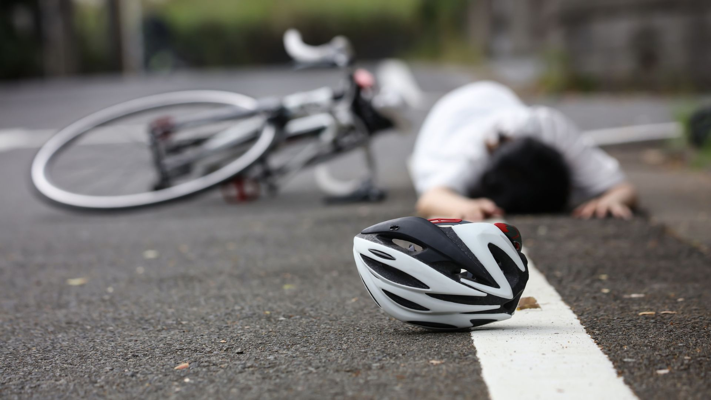

Bicycle Accident Cases in Huntsville, AL: Legal Insights for Injured Riders
If you’ve been injured in a bicycle crash, you may be searching for a personal injury lawyer near me who truly understands what you’re going through. One moment, you’re riding through a familiar Huntsville street, and the next everything changes. What follows is often overwhelming. You may be dealing with pain from your injuries, confusion about what happened, and the stress of mounting medical bills or time away from work.
For many injured cyclists, it is not just about physical recovery. It is the uncertainty. Who is responsible? How will you pay for treatment? What happens next? These are real concerns that can weigh heavily on you and your family.
At The Lackey Law Firm, we have spent decades helping injured clients across North Alabama through moments just like this. We understand that behind every case is a person trying to get back to normal life. Whether your accident involved a distracted driver or unsafe road conditions, working with a trusted personal injury lawyer, we can help you understand your options and take the next step forward with clarity and confidence.

Understanding Bicycle Accident Cases in Huntsville
Bicycle accident law cases fall under personal injury law. They arise when a cyclist is injured due to someone else’s actions or negligence. In many situations, these accidents involve motor vehicles, but they can also be caused by unsafe road conditions or other hazards.
For injured riders, these cases are not just about the accident itself. They are about what comes after. Medical treatment, time away from work, and the overall impact on daily life can quickly become overwhelming.
When a Bicycle Accident Becomes a Legal Claim
Not every fall or incident leads to a legal case. A bicycle accident claim typically involves:
- Injuries caused by another person’s negligence
- A driver failing to follow traffic laws
- Dangerous road conditions that should have been addressed
Situations where fault needs to be clearly established
When these factors are present, an injured cyclist may have the right to pursue compensation.
Key Differences in Bicycle Accident Cases
Bicycle accidents share similarities with cases handled by auto accident lawyers and a car accident lawyer, but there are important differences that can affect how a case is handled.
- Cyclists have little physical protection compared to drivers
- Injuries are often more severe, even at lower speeds
- Visibility issues can lead to disputes about fault
Insurance companies may attempt to shift blame onto the cyclist
Because of these challenges, working with an experienced personal injury attorney, we can help ensure your case is clearly presented.
The Real Impact on Injured Cyclists
For many people, a bicycle accident affects more than just their physical health. It can disrupt daily routines, limit mobility, and create financial stress for both the rider and their family.
Understanding the legal side of a case is not just about information. It is about regaining a sense of control during a difficult time. With guidance from a trusted injury lawyer, injured riders can begin to move forward with more clarity and confidence.
Factors Behind Bicycle Accidents in Huntsville
Bicycle accidents rarely happen without a reason. In many cases, there is a clear sequence of events that led up to the crash. Understanding these causes can help bring clarity to what happened and why it occurred.
As Huntsville continues to grow, traffic has become heavier and more complex. Cyclists are sharing the road with more vehicles than ever, and even a small mistake by a driver can lead to serious consequences for someone on a bike.
Driver Distraction
One of the leading causes of bicycle accidents is distracted driving.
- Looking at a phone or GPS
- Eating or adjusting controls inside the vehicle
Taking attention away from the road, even for a few seconds
For a cyclist, that brief distraction can mean the driver never sees them in time to avoid a collision.
Failure to Yield
Intersections are one of the most dangerous areas for cyclists.
- Drivers turning left or right without noticing a cyclist
- Misjudging a cyclist’s speed
Failing to stop at signs or signals
These situations often leave riders with little time to react.
Unsafe Passing and Blind Spots
Cyclists depend on drivers to give them enough space on the road.
- Passing too closely
- Not checking blind spots before changing lanes
Forcing cyclists off the road
Even a slight miscalculation can result in serious injuries.
Speeding and Aggressive Driving
Speed plays a major role in both the likelihood and severity of accidents.
- Reduced reaction time for drivers
- Increased force of impact
Higher risk of severe or long-term injuries
Aggressive driving behaviors can make an already risky situation even more dangerous.
Road and Environmental Conditions
Not all accidents are caused by driver behavior. Road conditions can also contribute.
- Uneven pavement or potholes
- Debris in bike lanes
- Poor lighting or visibility
Limited or poorly marked cycling infrastructure
These factors can create hazards even for careful and experienced riders.
Identifying the Cause Matters
Understanding what caused a bicycle accident is an important step in moving forward. It helps determine who may be responsible and what actions can be taken next.
Many of these situations are similar to cases handled by auto accident lawyers and a car accident lawyer, but cyclists often face more serious injuries due to limited protection.
Working with an experienced injury lawyer can help uncover the details of what happened and provide clarity during a stressful and uncertain time.
Steps to Take After a Bicycle Accident in Huntsville
The moments after a bicycle accident can feel disorienting. Adrenaline is high, injuries may not be fully clear yet, and it can be difficult to think about what to do next. Taking a few careful steps early on can make a meaningful difference for both your recovery and your case.
Prioritize Your Health First
Your safety comes before anything else.
- Seek medical attention right away, even if injuries seem minor
- Follow up with your doctor after the accident
Keep records of all treatments and symptoms
Some injuries take time to appear, and early documentation can be important later.
Report the Accident
Having an official record helps establish what happened.
- Call law enforcement to the scene
- Request a copy of the police report
Make sure key details are accurate
This report can become an important part of your claim.
Gather Information at the Scene
If you are able to do so safely, collect as much information as possible.
- Photos of the scene, your bicycle, and any vehicles involved
- Contact information for witnesses
Insurance and driver details
Small details captured early can make a big difference later.
Be Careful with What You Say
It is natural to want to explain what happened, but it is important to be cautious.
- Avoid admitting fault, even casually
- Do not speculate about the cause of the accident
Stick to the facts when speaking with others
Statements made in the moment can sometimes be used out of context.
Speak with a Legal Professional Early
You do not have to figure everything out on your own.
- A Huntsville personal injury lawyer can help you understand your options
- An experienced personal injury attorney can handle communication with insurance companies
Early guidance can help protect your rights from the start
After an accident, it is common to feel unsure about what comes next. Focusing on these steps can help bring a sense of direction during a stressful time.
With the right support, injured cyclists can begin to move forward with more clarity, knowing that the important details are being handled properly.
The Legal Process for Bicycle Accident Claims in Huntsville
After a bicycle accident, the legal process may feel unfamiliar. Understanding the basic steps can help you feel more prepared moving forward.
Investigation of the accident
Reviewing reports, medical records, and evidence to understand what happenedDetermining fault
Identifying who is responsible based on the facts and Alabama lawInsurance communication
Handling claims, statements, and settlement discussions with insurersNegotiation
Working toward a fair resolution based on your injuries and losses- Possible legal action
Filing a lawsuit if a fair agreement cannot be reached
Each case moves at its own pace, but having a clear understanding of these steps can make the process feel more manageable.
Compensation Available in Bicycle Accident Cases
After a bicycle accident, the impact is often more than just physical. Many injured riders face financial strain, time away from work, and ongoing recovery. A personal injury claim is meant to account for these losses.
Medical expenses
Costs for emergency care, hospital visits, rehabilitation, and ongoing treatmentLost income
Wages lost due to time away from work or reduced ability to earnPain and discomfort
The physical and emotional effects of the injury on daily lifeProperty damage
Repair or replacement of your bicycle and damaged gearLong-term effects
Ongoing care or lifestyle changes related to serious injuries
The type and amount of compensation can vary depending on the details of the case and how the injury has affected your life.

Evidence That Can Strengthen a Bicycle Accident Case
After a bicycle accident, evidence plays an important role in understanding what happened and supporting a claim. The more clearly the details are documented, the easier it becomes to piece everything together.
Photos and videos from the scene
Images of the roadway, vehicles, bicycle damage, and visible injuriesPolice reports
Official documentation of the accident and initial findingsMedical records
Documentation of injuries, treatment, and recovery progressWitness statements
Accounts from people who saw the accident happenTraffic or surveillance footage
Video that may show how the accident occurredPersonal notes and records
Keeping track of symptoms, recovery, and how the injury affects daily life
Even small details can become important over time, especially when questions about fault or the extent of injuries come up later.
Legal Support for Bicycle Accident Cases in Huntsville
After a bicycle accident, the right legal support can make a difference in how you move forward. It is not just about handling paperwork or dealing with insurance companies. It is about having someone who understands the situation and helps you navigate it with clarity.
We have served individuals and families across Huntsville and North Alabama for over 40 years. We approach every case with attention, care, and a focus on what matters most to the person involved.
Every case is different, but the goal remains the same. Helping you move forward with a better understanding of your options.
Trusted by Clients Across Huntsville and Surrounding Areas
Over the years, The Lackey Law Firm has built long-standing relationships within the Huntsville community. Many clients come to us during stressful and uncertain times, often through referrals from friends, family, or others who have worked with us before.
What people value most is not just experience, but the way they are treated throughout the process. Being heard, having questions answered, and feeling supported can make a difficult situation more manageable. That trust is something we continue to build with every case we handle.
Bicycle Accident FAQs for Huntsville Riders
After a bicycle accident, it is normal to have questions about your rights, the legal process, and what steps to take next. Below are answers to some of the most common concerns riders in Huntsville may have.
1. How long do I have to file a bicycle accident claim in Alabama?
In most cases, you have two years from the date of the accident to file a personal injury claim. Under Alabama Code § 6-2-38, most personal injury cases must be filed within two years. Acting sooner can help preserve important evidence.
2. What if I was partially at fault for the accident?
Alabama follows a contributory negligence rule, which means fault can affect your ability to recover compensation. Understanding how this applies to your situation is important.
3. Do bicycle accident cases always go to court?
Not always. Many cases are resolved through negotiation, but some may move forward if a fair agreement cannot be reached.
4. What types of damages can be recovered?
This may include medical expenses, lost income, and other impacts related to the injury, depending on the details of the case.
5. Do I need a lawyer for a bicycle accident case?
While it is not required, working with an experienced personal injury lawyer or injury lawyer can help you better understand your rights and options.

Key Takeaways for Bicycle Accident Cases in Huntsville
After a bicycle accident, it can be difficult to process everything at once. Focusing on a few key points can help bring clarity and make the situation feel more manageable as you move forward.
✓ Bicycle accidentcases often involve more than just the crash, including the physical, financial, and personal impact that follows
✓ Many accidents are linked to preventable factors such as distracted driving, failure to yield, and unsafe road conditions
✓ Taking early steps like seeking medical care and documenting the scene can help protect both your health and your case
✓ Understanding the legal processcan make it easier to navigate what comes next and avoid unnecessary stress
Keeping these points in mind can help you feel more prepared and informed as you deal with the aftermath of an accident.
If you have questions about your situation after a bicycle accident in Huntsville or anywhere in Madison County, call us at (256) 585-2980, or you may contact us today to discuss your case.